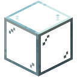

实验性 Alpha 版本。可能有破坏性变更和严重问题。欢迎反馈。
残差流
Transformer 围绕一个不断累加的和来构建。嵌入开启这个和；每一层读取它，算出些什么，再把结果加回去；最后一层把这个和变成分数。这个累加的和就是残差流。残差流就是它的导管。
 合成
合成



它如何流动
- 每个方块从正面把流传下去。侧面的箭头标出方向。
- 输出与流方块相接（面对面或经由线缆），就在那个方块处加入流。
- 输入与流方块相接，就读取流到达那里时的值，也就是在那个方块的加入之前。
- 最后一个方块正面的输入读取的是全部的和。
流起初是空的：第一个加入的东西，通常是嵌入，就是它从此承载的内容。贴着另一段流的正面放下的流会接续那段流，贴着输出放下的流则从那里开始。潜行使用某个面可转动方块。
流上的一层
嵌入表开始这个和，位置表再把自己的向量加进去。

注意力经过一个归一化器读取流，它的线缆在下一个方块处把结果加回去。

前馈在另一侧做同样的事，读到的流里已经有注意力加进去的东西。

最后一个归一化器读取全部的和，反嵌入把它变成分数。

这是一个 Transformer 层，按通常的画法摆放：读取、归一化、计算、加回。把流加长，就能叠上更多层。Transformer 块在一个方块内完成这一切，残差相加也包括在内，所以它要单独接成一条线，而不是放在流上：放在流上，它会把流加到自身两次。
为什么用流
每一层都是在细化这个和，而不是取代它，所以暂时没什么有用东西可加的层，可以不去动它。训练也走同一条捷径：梯度沿着流直接回到每一层。在普通的层层堆叠里，梯度回传时必须穿过每一层，层数一深，还没到底就消失了。你可以亲眼看到：模型训练时往回走的琥珀色波，到达流上每一层时都和起初一样亮，而沿着深的普通堆叠往下，则一层比一层暗。
规则
- 两条流不能流入同一个方块，流也不能绕成一圈。
- 机器在其输入相接处读取流，在其输出相接处加入流。在自己加回的位置之后读取，会形成回路。
- 一根线缆只接触一条流、且没有其他东西驱动它时，它承载这条流。一根线缆接触两条流而没有输出时，哪条也不承载：手持张量探针可以看到线缆承载的是什么。
张量机壳玻璃红石粉海晶砂粒残差流嵌入表把每个词元的向量加入第一个方块，位置表也加入自己的向量。
注意力经过一个归一化器读取流，它的线缆在下一个方块处把结果加回去。
前馈块在另一侧做同样的事。
末端，最后一个归一化器读取全部的和，反嵌入把它变成交给模型核心的分数。